2018年5月26日，中国联合办公标杆企业——氪空间，发布了华与华为其设计的全新品牌符号和品牌口号。

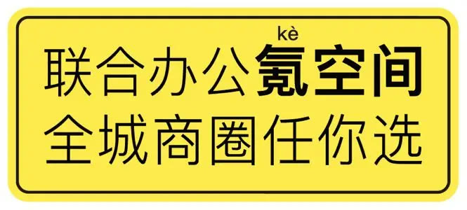
那么如此有刺激性的LOGO和广告语，到底是怎么创作出来的？今天华与华氪空间项目组就为大家独家揭秘！为什么给氪空间设计了一个路牌？为什么给氪空间创意了这句口号？它们的创作原理是什么？设计的过程运用了哪些华与华方法？赶快往下看！包你看完就会用！
2000多家中小微企业在氪空间联合办公2016年1月，氪空间从36氪母公司拆分独立运营，转型以联合办公为载体的企业服务平台，依托于36氪完善的创业生态平台，创新联合空间、联合服务、联合社群三位一体的全周期联合办公模式，为中小团队定制办公场景。空间产品体系包括能容纳不同人数的独立办公间、移动办公桌、开放工作区等，同时为入驻企业提供覆盖企业生命周期的企业级服务，和覆盖员工生活轨迹的个人级服务，全方位推动入驻企业发展。
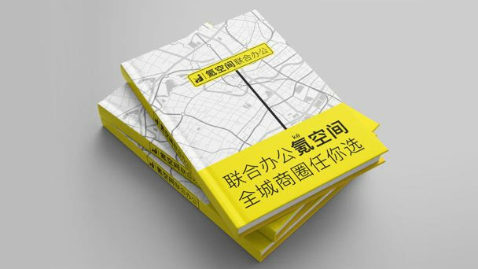
截至 2018 年 4 月，氪空间在全国 10 座城市拥有 40 个联合办公场所，分布在北京、上海、广州、杭州、南京、武汉、天津、苏州、成都、厦门等城市。氪空间的管理面积已接近20万平方米，提供超过30000个工位，有2000多家中小微企业在氪空间办公，真正成为中国的联合办公领头羊。
一切从建立品牌资产开始所谓品牌资产，就是能给品牌带来效益的消费者的品牌认知。品牌资产观呢，就是一切以是否形成品牌资产、保护品牌资产、增值品牌资产为标准。能，这件事就做；不能，这件事就不做。品牌资产的包含范围比较广，主要以品牌名称、符号、广告语三项为主，也包括品牌在其他维度的各项内容，就是能给品牌带来效益的消费者的品牌认知。以西贝莜面村为例，它已经形成的品牌资产就有下面这么多：
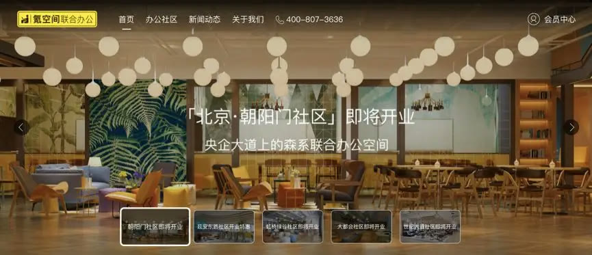
品牌资产观的方法，决定了我们开展一个项目的品牌工作之前，先要做一件事，叫品牌资产审核。就是审计、核算一下，已经形成了哪些品牌资产，哪些需要保护，哪些需要增值。在接收氪空间项目后，我们也对氪空间的品牌资产进行了审核。我们发现，在近几年转型发展的过程中，由于各种各样的原因，除了母公司36氪、和品牌名称氪空间，氪空间并没有形成更多的品牌资产。品牌符号上，更换了新的LOGO，还处于初步传播的阶段。广告语上，没有固定的说法，不同阶段、不同场景传播不同内容，并没有留存下来一句品牌的核心话语。
在保留唯一的、也是最重要的品牌资产——品牌名称之后，我们要思考和解决的问题就是建立新的品牌资产——品牌符号和广告语。这也是华与华的两大核心技术——词语的技术和符号的技术。
审计品牌资产，保留品牌命名
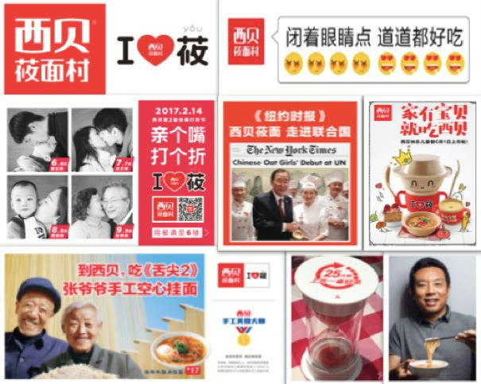
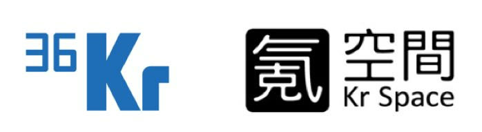
我们并没有改LOGO、换广告语的偏好，不是服务一个品牌就非要改别人的LOGO和广告语。改与不改，不取决于偏好，取决于两个基本原理：第一，有没有形成品牌资产；第二，营销传播成本够不够低。品牌资产观前面讲过了，第二条就是品牌成本论，一切创意都是为了降低品牌的营销传播成本。LOGO的成本高低体现在哪里呢？不知道大家有没有思考过，LOGO为什么存在？LOGO的存在首先是为了辅助记忆品牌名称，天猫的LOGO画了一只猫，它就辅助记忆了天猫的品牌名称。京东的LOGO画了一只狗，它就没那么顺其自然，传播成本就比天猫要高不少。
其实，如果对比大多数企业的LOGO，京东的已经算是成本比较低的了。我们在各种商务场合中，经常与别人交换名片。如果大家注意看，就会发现大多品牌的LOGO是抽象的、看不懂的，设计公司一般都会发散思维，介绍这种弧线象征了什么，那种色彩象征了什么，解释这LOGO背后的深刻寓意。我们需要注意的是，除了提案的传播场景之外，没有其他传播场景里有人给消费者介绍LOGO背后的深刻寓意。终端传播场景非常复杂，真的是人群中撇你一眼，所以华与华会强调LOGO的创意要有自明性，一目了然，不需要解释。我们开始合作的时候，氪空间刚刚启用了新的品牌 LOGO，就是下图这个。在我们看来，它的成本高在哪些地方呢？
首先，把“间”做成了繁体字，不好识别；其次，这样一个LOGO看不出这个品牌是做什么的，作为一个新品牌，这是一个巨大的问题；最后，这个LOGO刚开始启用，还没能形成品牌资产，而我们的任务就是降低它的营销传播成本，让它变得超级起来。
氪空间超级符号——创造新的城市公共标识我们先复习下，什么叫超级符号呢？我们以前讲过符号的指称识别、信息压缩、行动指令三大功能，超级符号就是这三大功能都达到最强的符号。指称最强势、最明确。浓缩信息量最大、最强、最准确。行为意志力最强，对人的行为影响力最强，且影响的人最多。这就是超级符号。使用超级符号，能够最大程度地提高品牌的传播效率。什么样的符号这么超级呢？主要是公共符号和文化符号。公共符号，比如红绿灯、交通标志、男女厕所标志，这就属于最强大的公共符号，因为全世界所有人都认识，而且听它指挥。所谓一切行动听指挥，我们每天都在听符号指挥。
挑战超级符号的后果是严重的，中国曾经两次挑战红绿灯。一次是“文革”的时候，把红灯改为行，绿灯改为停，很快就因为造成混乱停止了；第二次是2012年的黄灯停新交规，也是不了了之。所以，我们说超级符号是人人都看得懂的符号，并且人人都按照它的指引行事的符号，人们甚至都不会去思考它为什么存在，只要一看见这符号，就会听它的话。不仅成本最低，而且还能指挥行动。那么，氪空间的超级符号是什么？我们再回到品牌本身，氪空间是做联合办公的，是一个空间场所、一个目的地，也是一个办公场所，存在于一个城市当中。我们就从城市公共标识中去找，前面已经讲到公共标识的能量是最强的。我们假设了这样一个场景，有一个客户在街头看到了氪空间的LOGO，就知道它是干什么的，怎么去找到它。我们就找到了两个原型。第一个就是交通路牌。
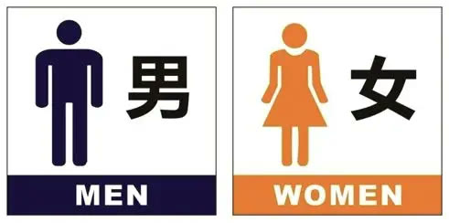
我们每天都能看到路牌，我们也都会按照路牌的指示行动。如果你违反，那就只能……迷路。1968 年，联合国公布《道路交通和道路标志、信号协定》作为各国制定交通标志的基础。从此各国的交通标志在分类、形状、颜色、图案等方面逐渐向国际统一的方向发展。也就是说这是一个全世界都能看懂的符号，符合氪空间未来走出中国、布局亚太，成为世界品牌。第二个原型，就是办公小人。
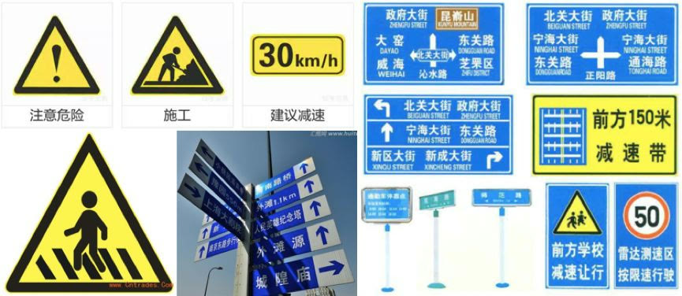
如果说到办公，我们最容易想到的符号就是这些小人。在机场、写字楼、公共空间里，我们经常能够看到不同的房间、位置外面挂着不同的指示牌，表示不同的功能和地方。那么这些小人哪里来的呢？这就要追溯到人类祖先的生活轨迹。从古埃及的岩洞画，到敦煌壁画，我们都能看到小人作为形象存在。我们画的就是我们自己，通过不同的场景来表达不同的含义。一直到现在，成为了人们约定俗成的表达方式，既是公共符号，也是文化符号。
在这样两个原型的基础上，一个“类公共符号”的品牌符号创意就诞生了。
氪空间的超级符号，本身是一个黄色的路牌，黄底黑字。黄色路牌在交通标识中的含义是警示色，相对于蓝色路牌，在实际应用的过程中更加醒目。前面坐着的办公小人，参考公共标识的排列方式，显示氪空间所处的行业和特性。标注“联合办公”，是明确表达氪空间是做联合办公的，与传统写字楼办公有所区分。在联合办公还没有全民普及，市场还需要教育的时候，明确自己是卖什么的再重要不过了。这样一个类公共符号，首先降低了传播成本，一目了然的看到氪空间是做什么的。其次，它会唤醒人们脑海中的集体潜意识，就是关于路牌的认识，这种认识让人们对氪空间这样一个新品牌产生了熟悉感，成为了老朋友。并且更重要的是，这样一个类公共符号，在潜移默化中指挥着人们的行动。
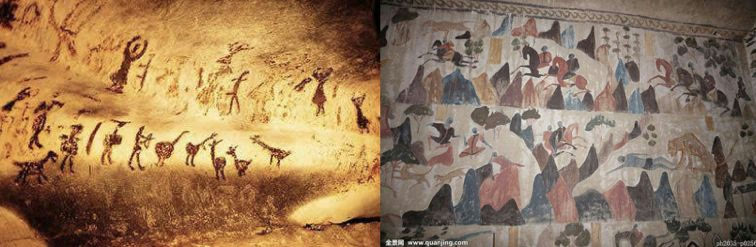
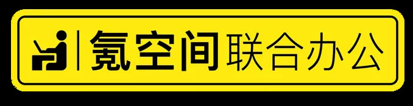
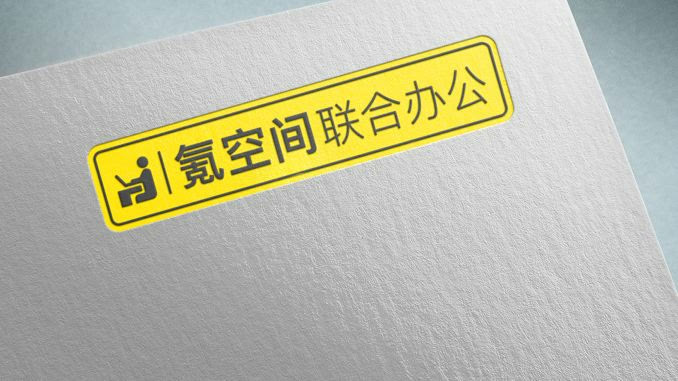
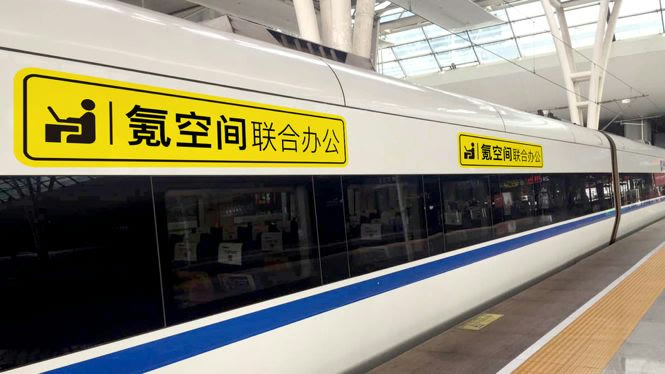
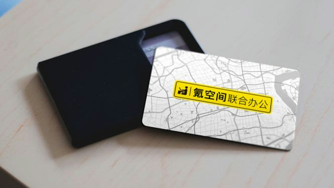
氪空间全新品牌符号，旨在创造新的城市公共标识，形成氪空间品牌的超级符号系统，建立新的品牌资产，打造全民联合办公空间。未来的氪空间，既是对传统办公的全新升级，也将会是每一个城市的组成部分。如何成为城市的一部分？就是把自己设计成城市的一部分。一个符号就让氪空间成为了所有城市的组成部分，而且是全世界通行。
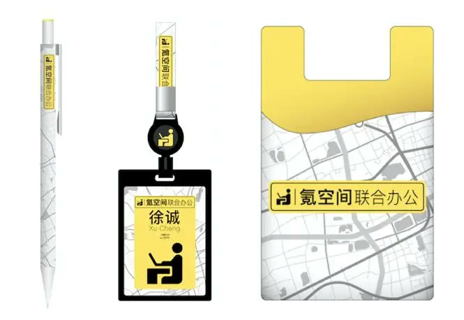
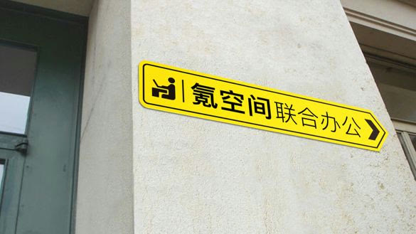
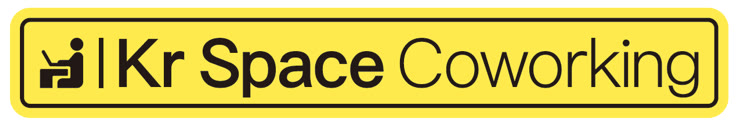
一句口号推销一座城市的所有氪空间如果给品牌资产排序，名字第一，符号第二，总之，叫什么名字，长什么样子，这是最重要的品牌资产，解决人们从视觉和听觉两大感官与品牌连接的问题。口号呢，我们把它定位为品牌的第三资产。在这个重要程度上想想，你的品牌口号是什么？如果一下子说不出来，而且觉得自己没口号也活得很好，那是闲置了一个营销传播的战略工具，没发挥。氪空间呢，之前就属于口号经常换，没有重复使用同一个并且不断投入，就很难形成品牌资产，就失去了这样一个有力的营销传播工具。在讲氪空间口号创意之前，我们先讲一下地产行业的广告打法。地产公司的产品开发战略是以城市为单位，不断开发新的楼盘。每开发一个楼盘，就为一个楼盘打广告做宣传。每个楼盘都叫不同的名字，比如一个城市有好几个万科的楼盘，有的叫万科金域蓝湾，有的叫万科未来城，每个项目也都有独立的营销预算和营销周期。氪空间做联合办公，产品开发战略类似地产公司。也是以城市为单位，拿核心商圈的物业，重新分割、装修成为新的氪空间联合办公空间产品。但跟住宅地产不同的是，住宅地产开发周期会长达几年，而氪空间的开发周期一般在半年以内。也就是说，在同一时间，同一座城市，同时会有好几个氪空间开业招租。而且考虑到氪空间未来会在一座城市有更多的布点，同时有新空间开业，也同时会有老空间招租，这种情况下，如果还是按照传统地产的打法，以项目为单位做广告传播，成本就会很高。如何解决呢？我们先从氪空间的产品开发战略开始。氪空间的产品开发战略，就是先占领一线城市及创新指数较高的二线城市，在每一个城市里，围绕核心商圈拿物业，形成不同的组团。有了商圈，就有了一切配套。即一个城市，有几个大型的氪空间组团，每个组团里都有几个或者更多的氪空间。这种产品开发战略，启发了我们对于广告传播打法的思考。如果能从原来的以项目为单位做广告，变成以城市为单位做广告，就可以把所有项目的营销预算合在一起，为一座城市的所有氪空间做广告，它的传播量级就会成几何级增长，同时覆盖这座城市的所有氪空间。想以城市为单位做品牌广告，就要先从产品命名上解决。根据氪空间围绕商圈拿物业并形成组团的打法，在命名上我们也使用了降低营销传播成本的一级命名体系，就是“核心地标+氪空间”，比如静安寺氪空间、陆家嘴氪空间等。把商圈位置标注在前面做区分，以氪空间品牌名称为主，统一所有空间的命名，不断重复形成规模感。
命名统一之后，接下来要做的就是，找到氪空间的购买理由，创意一句推销一座城市所有空间的品牌口号。品牌口号怎么写？华与华有绝招，叫“品牌谚语填空法”。口号的最高境界就是谚语，我们每个人都知道几句谚语，谚语是知识传承、生活忠告和行动指南，是口口相传的人类文化。我们希望品牌的口号，也能成为谚语，在消费者中口口相传。什么是填空法呢，就是根据华与华方法中的口号创作要求，一个词一个词的填。
第一，要有品牌名称，写下“氪空间”。好了，口号就有三个字了。
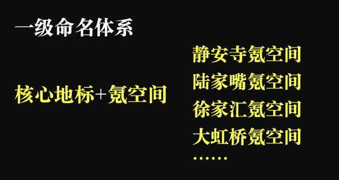
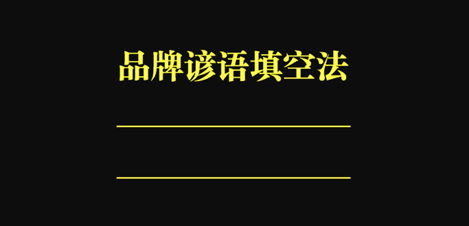
第二，要有品类名，要让别人看到后，知道你是卖什么的。好了，又有了四个字，联合办公。
第三，要有超级词语，围绕超级词语形成购买理由。超级词语哪里找？我们先还原下客户找办公室的决策场景。
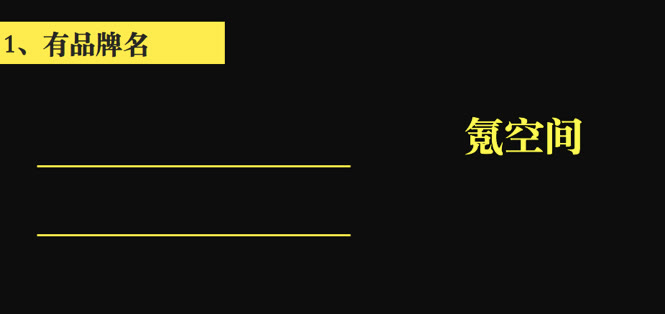
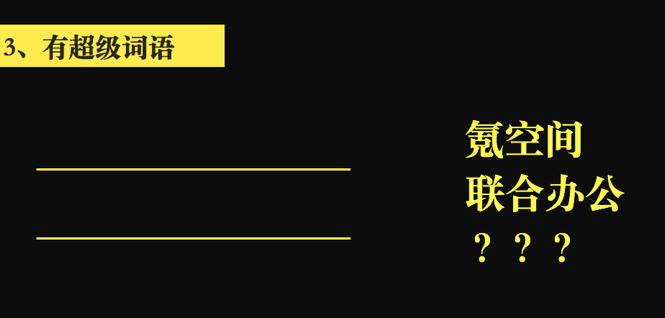
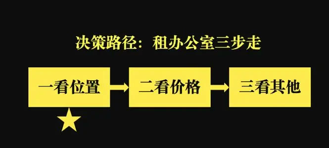
通过上图中对选择逻辑的还原，我们发现客户租办公室，都是先看位置。说到位置的超级词语，就是商圈。因为有了商圈，就有了一切配套，地段、交通、生活等等，一切都有了。而且氪空间的产品开发战略也是以商圈为主，可以从产品战略一直贯穿到品牌口号。但只有商圈，还称不上超级词语，再超级一点，就是“全城商圈”，这样就能够体现出氪空间的规模，和氪空间的购买理由，全城商圈都有氪空间，任你选。
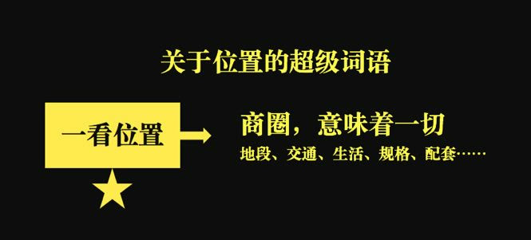
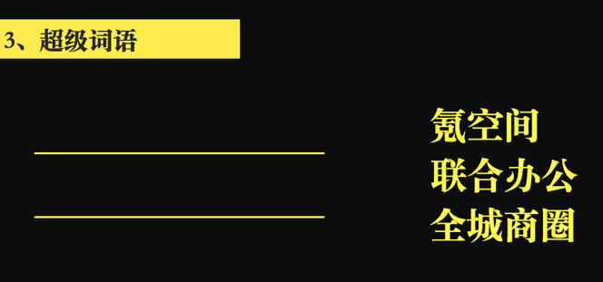
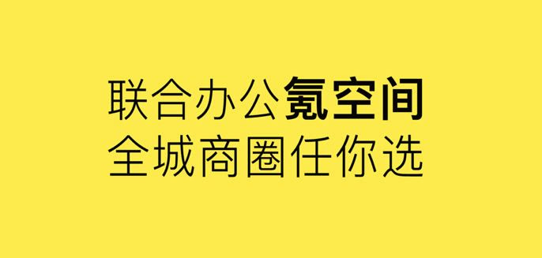
这样的一句话，就成为氪空间的购买理由，全城商圈任你选。就能够通过一句话来推销全城所有的氪空间，就跟前面的产品命名体系合为一体。有这样的命名体系，有这样一句口号就可以推全城空间。
最后，“氪”是个生僻字，考虑很多人不熟悉，为了降低“氪”的传播成本，就在“氪”字上面标注了拼音。然后根据前面的品牌超级符号——路牌，做了口号的标板应用，从符号到产品开开发到口号，一以贯之。
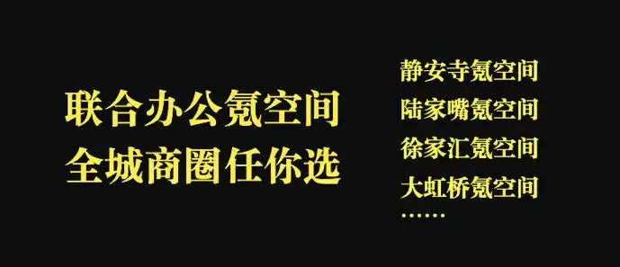
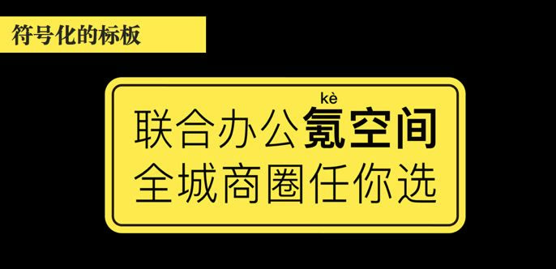
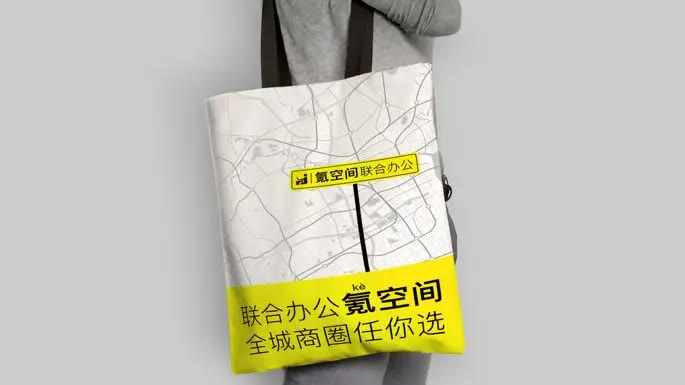
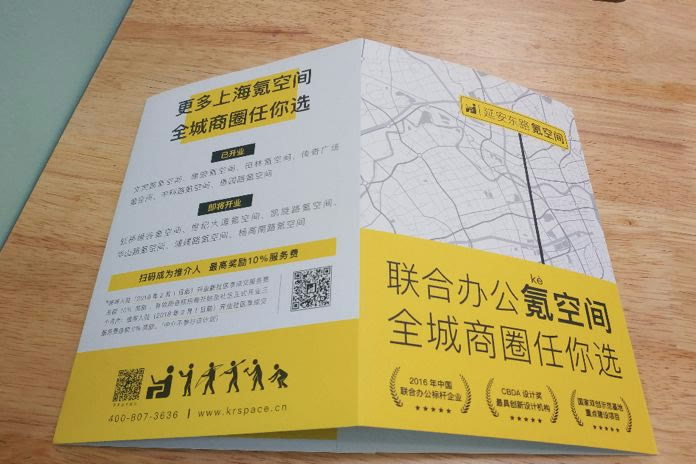
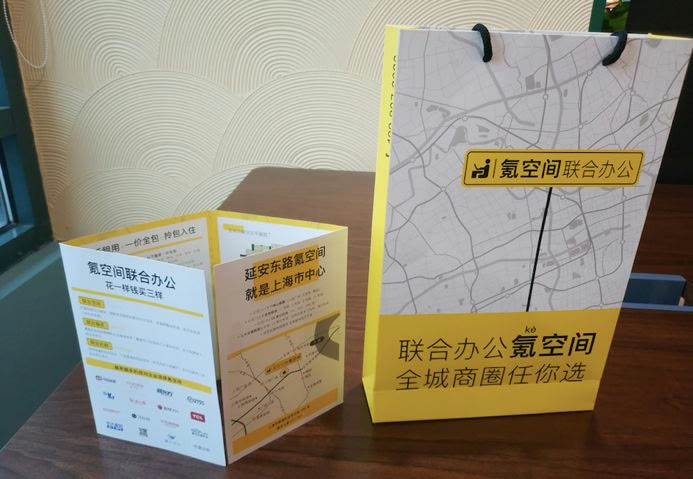
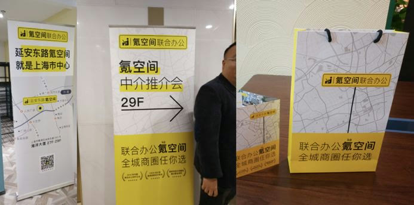
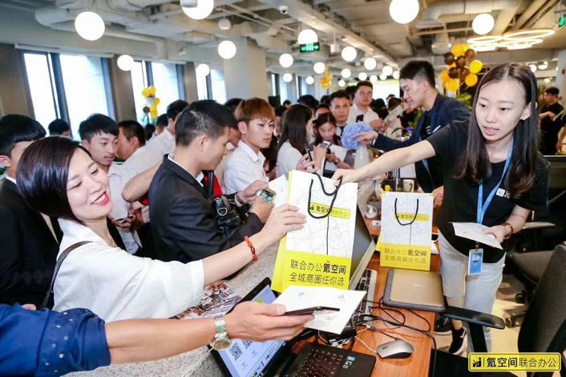
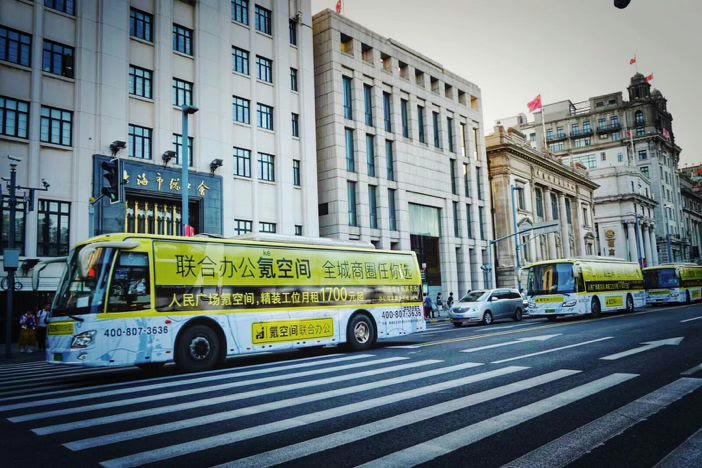
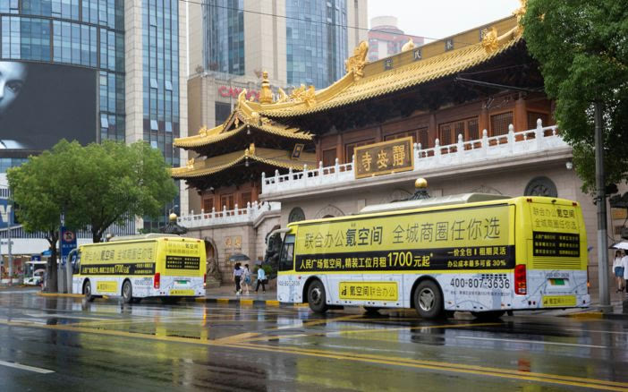
创意方法总结以上就是华与华项目组为大家分享的，氪空间符号和口号创作过程。类公共符号方法是华与华超级符号创作法中的强有力工具，品牌谚语填空法是华与华超级口号创作法中的强有力工具，下面再跟大家回顾一下它们的创作过程，便于大家应用到实践当中。氪空间类公共符号的创作过程回顾：1、挖掘联合办公的行业属性，找到与城市、办公关联最为密切的公共符号原型——路牌和办公小人；
2、选择更常见、指示性更强的长方形路牌，和最具代表性的侧面半身办公小人形象；3、将公共符号原型与氪空间品牌相结合，融合路牌、办公小人和氪空间品牌名，让氪空间的符号一看明白是做什么的，一看就知道是氪空间的，一看就按照路牌的指示行动；4、选择路牌中的警示色——黄色，终端传播更有视觉优势；加入“联合办公”，明确界定品类。氪空间品牌口号的创作过程回顾：1、品牌谚语填空法的第一步，先写下品牌名，广告语要有品牌名；2、明确品类是“联合办公”，出租联合办公室，不是传统办公室；3、思考产品开发战略，找到核心词语“商圈”；还原客户租办公室的选择逻辑和决策过程，找到超级词语“全城商圈”；4、围绕超级词语编辑超级句式，给出说动客户的购买理由，给出一句话推广全城所有空间，降低营销传播成本，“全城商圈任你选”；5、传播是口语不是书面语，俗语不设防，押韵更容易突破客户的心理防线，联合办公氪空间，全城商圈任你选；6、把口号符号化，做成路牌标板，重复强化形成品牌资产，并为“氪”字标注拼音，降低生僻字的识别成本。